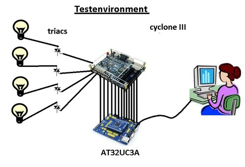

design ideas / diary
a scratch diagram of the memory
interfaces
This scratch diagram shows a "memory interface" to the fpga.
Each triacdriver has got it's own address and the triac trigger delay can be
entered as a ten bit positive integer in the range of 0 to 1024. A half
cycle of AC (10 mSecs in our 220 V public current) is divided by 1024 and
the integer describes the point of time in this interval when triac trigger
takes place.
The zeropass detector is needed because the triacdriver needs to be synchronised
with the AC timing.
The fpga finally transmits the different trigger current pulses to the triac drivers
with a trigger duration of approx 5 uSecs. To be able to switch highly
inductive loads, a pulse train will be sent after the initial pulse with an
interval time of approx. 100 uSecs, what means approx 10 pulses per mSec.
ideas about the input/output component
of the rustLight project, printed out by using Quartus-II netlist RTL Viewer
(built with sourcecode of July 5, 2016)
a RationalRose state diagram
of the triacDriver as a first idea how this driver could work
( March 24, 2016)
During summertime 2016 I was rather busy with other works, holidays and
meetings, so that until end august I had hardly any time to work on rhe
rustlight project.
Now as per September 2016 rustlight project is ready for first tests (and
final implementation) on the hardware and during the last days I developed
an interface to the cyclone III testboard from an avr32 processor bord using
micrium II os. I could easily develop this out of the dcfAnywhere project
code. This interface is ready for testing an I am developing finally a
little C++ application on pc to send data to the avr32 interface, which will
forward the data on the data/address/control wires to the cyclone III board.
Later I plan to develop the whole vhdl data exchange using avalon
communication and interfacing the application on the cyclone III board
via tcp/ip or serial rs232.
